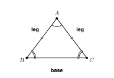
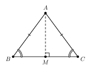
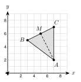

1.
2.
3.

AB ≅ AC in the figure. Name the legs, the base, the vertex angle, and the base angles.
Legs:
Base:
Vertex angle:
Base angles:

The vertex angle of an isosceles triangle is 40°. Find each base angle.
The base angles are equal. Together they measure 180 − 40 = .
Each base angle is 140 ÷ 2 = .
A base angle of an isosceles triangle is 52°. Find the vertex angle.
Both base angles are 52°. Their sum is 2(52) = .
The vertex angle is 180 − 104 = .
In △ ABC, m∠B = m∠C = 65° and AB = 9. Find AC.
AC is across from ∠B and AB is across from ∠C. The angles are equal, so the sides across from them are .
AC =
a. The vertex angle of an isosceles triangle is 80°. Find each base angle.
b. A base angle of an isosceles triangle is 35°. Find the vertex angle.
△ ABC is equilateral. AB = 2x + 1 and BC = 3x − 4. Find x and the perimeter.
All sides are equal, so 2x + 1 = 3x − 4.
5 = x, so x = .
Each side is 2(5) + 1 = . The perimeter is 3 · 11 = .
AB ≅ AC. The vertex angle is 50°. The base angle ∠B is (3x + 5)°. Find x.
Base angles together: 180 − 50 = 130. Each base angle is 130 ÷ 2 = .
3x + 5 = 65, so 3x = 60 and x = .
AB ≅ AC. AB = 2x + 1, AC = x + 8, and BC = 12. Find x and the perimeter.
The legs are equal, so 2x + 1 = x + 8 and x = .
Each leg is 7 + 8 = . The perimeter is 15 + 15 + 12 = .
AB ≅ BC and AD ≅ DC. m∠B = 40° and m∠D = 100°. Find m∠BAD.
In △ ABC, each base angle is (180 − 40) ÷ 2 = . So m∠BAC = 70°.
In △ ADC, each base angle is (180 − 100) ÷ 2 = . So m∠CAD = 40°.
m∠BAD = 70 + 40 = (angle addition).

A(7, 2), B(3, 5), C(7, 7). Show that △ ABC is isosceles with base BC. Show that the line from A to the midpoint M of BC is perpendicular to BC.
AB = 42 + 32 = and AC = 02 + 52 = . The legs are equal.
Midpoint of BC: M =
Slope of BC: 7 − 57 − 3 =
Slope of AM: 6 − 25 − 7 =
12 · (−2) = −1, so AM ⊥ BC.
1. The two congruent sides of an isosceles triangle are the legs. The angle between them is the . The angles on the base are the .
2. Base angles are . The converse is also true: equal angles mean equal sides. A fold line is a .
3. An triangle has three 60° angles.
4. The line from the vertex to the midpoint of the base is to the base.
1. Name the legs.
2. Name the base.
3. Name the vertex angle.
4. Name the base angles.
5. Vertex angle 30°. Each base angle is
6. A base angle is 62°. The vertex angle is
7. Vertex angle 110°. Each base angle is
8. XY ≅ XZ and m∠Y = 57°. Find m∠Z and m∠X.
9. In △ ABC, m∠A = 64° and m∠B = 64°. Which two sides are congruent?
10. In △ JKL, JK = KL = 7. Which two angles are congruent?
11. △ ABC is equilateral. AB = 4x − 3 and BC = 2x + 7. Find x and the perimeter.
12. Each angle of an equilateral triangle is (6x)°. Find x.
13. Ahmad says a triangle with sides 5, 5, and 8 is equilateral. Find his mistake.
14. AB ≅ AC. AB = 3x − 1 and AC = x + 9. Find x and AB.
15. AB ≅ AC. m∠B = (4x − 10)° and m∠C = 50°. Find x and the vertex angle.
16. The vertex angle of an isosceles triangle is (4x)°. Each base angle is (3x + 10)°. Find x and the three angles.
17. An isosceles triangle has legs (x + 6) and a base (2x − 3). The perimeter is 41. Find x and the three sides.
18. Find m∠BAC.
19. Find m∠D and m∠BCD.
20. A(1, 1), B(5, 1), C(3, 6). Show that △ ABC is isosceles. Name the congruent sides.
21. In problem 20, find the midpoint M of AB. Show that CM is perpendicular to AB.
22. A(6, −1), B(1, 0), C(7, 4). Show that AB = AC. Then show that the line from A to the midpoint of BC is perpendicular to BC.
23. A roof gable is an isosceles triangle. The angle at the peak is 110°. Find each base angle.
24. A yield sign is an equilateral triangle with sides of 36 inches. Find the perimeter and each angle.
25. Kofi says: “The vertex angle is 40°, so each base angle is 40° too.” Find his mistake.
A. 48°
B. 66°
C. 132°
D. 84°
A. All three angles are congruent.
B. The base angles are congruent.
C. The vertex angle measures 60°.
D. All three sides have different lengths.